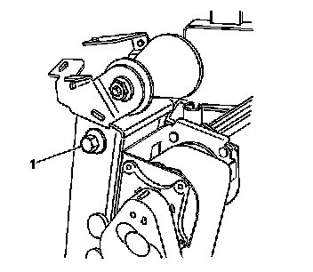

Roller Replacement - Front Seat Belt
Roller Replacement - Front Seat Belt
Removal Procedure
1. Remove the seat back trim. Refer to Front Seat Back Trim Replacement (Front Seat Back Trim Replacement) .
2. Remove the head restraint. Refer to Front Seat Head Restraint Replacement (Front Seat Head Restraint Replacement) .
3. Remove the head restraint retainers. Refer to Front Seat Head Restraint Retainer Replacement (Front Seat Head Restraint Retainer Replacement) .
4. Remove the seat back cover far enough to gain access to the roller assembly. Refer to Front Seat Back Cushion Cover and Cushion Pad Replacement (Front Seat Back Cushion Cover and Cushion Pad Replacement) .
5. Remove the seat belt roller assembly cover screws.
6. Remove the seat belt roller assembly cover.
7. Lift the seat belt over the roller assembly.

8. Remove the seat belt roller assembly bolt (1) from the lower seat frame.
9. Remove the roller assembly.
Installation Procedure
1. Install the seat belt roller assembly into the seat frame.
Notice: Refer to Fastener Notice .
2. Install the roller assembly bolt (1).
Tighten the retaining nuts to 52 N.m (38 lb ft).
3. Install the seat belt roller assembly cover.
4. Install the seat belt roller assembly screws.
Tighten the screws to 5 N.m (44 lb in).
5. Ensure that the seat belt is not twisted.
6. Install the seat back cover. Refer to Front Seat Back Cushion Cover and Cushion Pad Replacement (Front Seat Back Cushion Cover and Cushion Pad Replacement) .
7. Install the seat back trim cover. Refer to Front Seat Back Trim Replacement (Front Seat Back Trim Replacement) .
8. Install the head restraint retainers. Refer to Front Seat Head Restraint Retainer Replacement (Front Seat Head Restraint Retainer Replacement) .
9. Install the head restraint. Refer to Front Seat Head Restraint Replacement (Front Seat Head Restraint Replacement) .
10. Ensure the seat belt operates correctly.